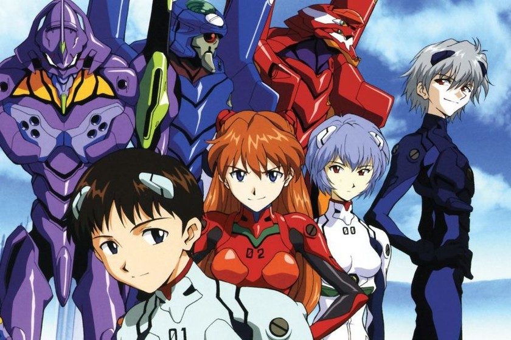

La serie se inicia en el año 2015 de la era cristiana, quince años después del primer y desastroso contacto con unos misteriosos seres conocidos como ángeles, que resultó en un cataclismo a escala mundial llamado Segundo Impacto, que redujo a la mitad la población humana en la Tierra.
Para prevenir futuros ataques de ángeles, la ONU estableció en Tokio-3 la organización NERV, la cual desarrolló una serie de gigantes biomecánicos llamados Evangelion -abreviado EVA- para combatirlos. Debido a que los Evangelion solo pueden ser pilotados por adolescentes, el dirigente de NERV, Gendo Ikari, se comunica con su distanciado hijo, Shinji, para que pilote la Unidad-01 de los Evangelion, y acabe con el tercer ángel, que se halla atacando la ciudad.
Hacia los últimos episodios, los personajes comienzan a entender que el auténtico plan de NERV es el llamado Proyecto de Complementación Humana, con el cual pretenden eliminar la individualidad humana y fusionar a toda la humanidad en un mismo ser para poner fin a todos los conflictos, la soledad y el dolor provocados por la existencia individual. NERV y SEELE entran en conflicto por la ejecución del proyecto.
Una vez iniciado el Proyecto, el cuarteto protagonista, Shinji, Misato, Rei y Asuka se ven obligados a hacer frente a sus dudas, temores y examinar su valor.
Este final se hizo a base de secuencias retrospectivas, visiones, textos parpadeantes y un montaje de imágenes sombrías, que incluyen lúgubres fotografías en blanco y negro de desolados motivos urbanos.
También se muestra una vida alternativa con los mismos personajes, que entraría en un género de comedia juvenil. Cuando con el tiempo Shinji se da cuenta de que vale la pena vivir y que no hay necesidad de ser un piloto de EVA para justificar su existencia, es rodeado por la mayoría de los personajes aplaudiendo y felicitándolo. Después de estas escenas, Shinji concluye sus reflexiones y despide la serie.
El ambiguo y poco claro sentido de los dos últimos episodios dejó a muchos fans confusos e insatisfechos. Estos episodios fueron los más controvertidos de una ya de por sí polémica serie, calificados por muchos de imperfectos e incompletos. Sin embargo, Anno y el subdirector Kazuya Tsurumaki defendieron la integridad artística del final, si bien en la película The End of Evangelion se muestra un final diferente, que complementa al de la serie.
A bordo del Evangelion, Shinji es dejado inconsciente al poco tiempo de comenzar la batalla, pero súbitamente el EVA entra en modo berserk, actúa por sí mismo y destruye al ángel.
Tras eso, Shinji se adapta a su nueva vida en Tokio-3, viviendo con la capitana Misato Katsuragi como su tutora. En la escuela de la ciudad conoce a los que serán sus mejores amigos, Toji Suzuhara, Kensuke Aida y Hikari Horaki, así como a la enigmática Rei Ayanami, piloto de la Unidad-00.
Con el transcurrir de la serie, Misato lleva a Shinji, Toji y Kensuke al convoy naval de las Naciones Unidas encargado de transportar la Unidad-02, pilotada por Asuka Langley Sohryu. Poco después, Asuka se muda a casa de Misato, encontrando dificultades en la convivencia entre ella y Shinji.